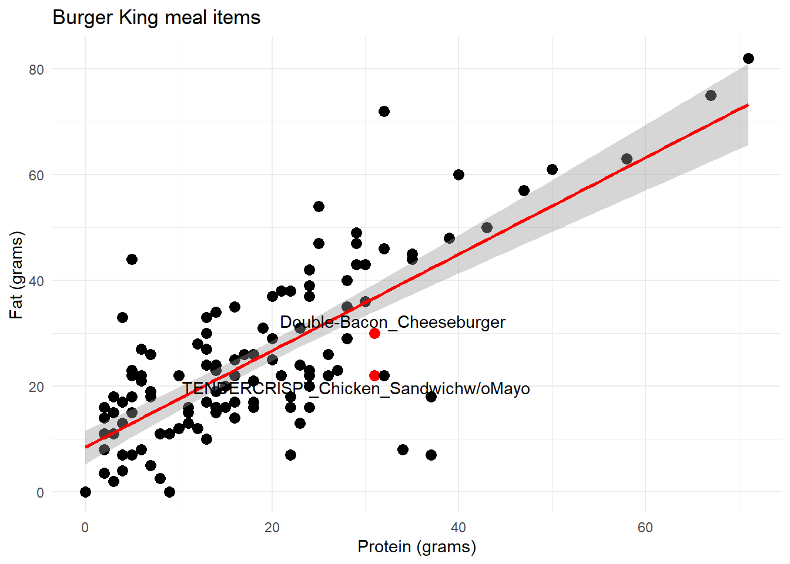

Linear regression helps us to predict what one variable will be if we have data for another variable. Correlation on its own is not enough.
It is possible to draw a line of best fit through data to help make predictions.Of course, the line won’t join up with all of the data points, but it will show the trend. We want the line that is closest to all the data points compared to any other possible line.
The predicted value from the model is called y-hat or: $ $
Now we have the data, lets run the summary:
summary(burgers)## Item Serving_size
## 1%LowFatChocolateMilk(8oz) : 1 Min. : 43.0
## A1¨_Steakhouse_XTª : 1 1st Qu.:113.5
## AmericanOriginalChicken_Sandwich : 1 Median :158.0
## Bacon_Cheeseburger : 1 Mean :167.8
## BaconEgg&CheeseBiscuit : 1 3rd Qu.:216.5
## Biscuit_w/ChickenFri[er(ChickenBiscuit): 1 Max. :487.0
## (Other) :116 NA's :11
## Calories Fat_Cal Fat_g SatFat_g
## Min. : 25 Min. : 0.0 Min. : 0.00 Min. : 0.000
## 1st Qu.: 310 1st Qu.:127.5 1st Qu.:14.25 1st Qu.: 4.000
## Median : 410 Median :190.0 Median :22.00 Median : 7.000
## Mean : 454 Mean :206.2 Mean :24.83 Mean : 8.701
## 3rd Qu.: 550 3rd Qu.:267.0 3rd Qu.:33.00 3rd Qu.:12.000
## Max. :1310 Max. :650.0 Max. :82.00 Max. :32.000
## NA's :6
## TransFat_g Chol_mg Sodium_mg Carb_g
## Min. :0.0000 Min. : 0.00 Min. : 0.0 Min. : 2.00
## 1st Qu.:0.0000 1st Qu.: 20.00 1st Qu.: 490.0 1st Qu.: 27.00
## Median :0.0000 Median : 52.50 Median : 905.0 Median : 34.50
## Mean :0.3033 Mean : 92.83 Mean : 930.2 Mean : 39.65
## 3rd Qu.:0.5000 3rd Qu.:143.75 3rd Qu.:1245.0 3rd Qu.: 50.00
## Max. :2.0000 Max. :455.00 Max. :3310.0 Max. :134.00
##
## Fiber_g Sugar_g Protein_g
## Min. :0.000 Min. : 0.000 Min. : 0.00
## 1st Qu.:1.000 1st Qu.: 3.000 1st Qu.: 7.00
## Median :1.000 Median : 6.000 Median :15.50
## Mean :1.897 Mean : 9.967 Mean :18.02
## 3rd Qu.:3.000 3rd Qu.: 9.750 3rd Qu.:24.75
## Max. :9.000 Max. :58.000 Max. :71.00
## NA's :6Now to replicate the scatter plot in the textbook:
# This was useful: https://cran.r-project.org/web/packages/ggrepel/vignettes/ggrepel.html
library(ggplot2)
library(ggrepel)
ggplot(burgers) +
aes(x = Protein_g, y = Fat_g) +
geom_point(size = 3L,color = ifelse(burgers$Protein_g >30.5 & burgers$Protein_g <31.8, "red", "black")) +
#geom_smooth(span = 0.75) +
geom_smooth(method='lm',color="red") +
labs(x = "Protein (grams)", y = "Fat (grams)", title = "Burger King meal items") +
# use modified geom_text code to filter labels to only specifics
geom_text_repel(data=subset(burgers, Protein_g >30.5 & Protein_g <31.8 ),
aes(Protein_g,Fat_g,label=Item)) +
theme_minimal()
We would expect the items with around 31 grams of protein to have about 37 grams of fat, but one of these items only has 22 grams of fat. It is a chicken sandwich, and chicken normally has a lower fat content. The other item, the Double-Bacon cheesburger, is much closer to the predictde value.
The residual tells us how far off from the predicted value the observed value is.
Residual = Observed value - Predicted value.
In this case the residual is about 15 grams of fat.
So the best-fit line will be the one with the least residuals.
BUT if we just add up all the residuals, some will be negative and some will be positive, so they will cancel each other out. So instead we square the values, just like we do in standard deviation, so we only have positive numbers.
So the line can be evaluated by squaring all the residuals and then choosing the line with the smallest sum. Also known as “the least squares line” (this is a bit weird, because least squares sounds like the least number of squares but it’s actually the smallest square sum…)
In algebra, a straight line can be written as: y = mx + b
The linear model can be written in similar way in statistics:
$ = b_0 + b_1x$
y-hat signifies that these are predicted values. $ b_1$ is the slope while $ b_0$ is the intercept - the value where the line cuts the y-axis.
So in the Burger King example above, the line of best fit is:
$ = $ 8.4 + 0.91g Protein
The line starts at 8.4g (though this is misleading of course and it doesn’t necessarily mean that an item exists with 0g Protein will have 8.g of fat, so this part of the line should be considered carefully) and then for every additional gram of protein, the item contains an additional 0.91grams of Fat.
The formula is built up of:
The means - tells us where to put the line The standard deviations - to get the units The correlation - to tell us the strength of the relationship.
So slope (b1) is:
$ b_1 = r $
Correlations don’t have units, but slopes do, for example you express time in days, months or years and you would get a different slope depending on which one you used (growth of kids expressed over years will look much sharper than expressed over days…, it will also result in a different standard deviation number, which will be much larger when measuring in days compared to years).
The units of the slope are always how many units of y per unit of x.
The intercept: The value of y when the x value was $ $ should obviously be $ $. So:
\(b_0 = \overline{y} - b_1 \overline{x}\)
Intercept = y-mean minus slope * x-mean
Need to get the Mean of the variables and the standard deviation.
fatMean <- mean(burgers$Fat_g)
fatMean## [1] 24.82787protMean <- mean(burgers$Protein_g)
protMean## [1] 18.01639fatSD <- sd(burgers$Fat_g)
fatSD## [1] 16.19557protSD <- sd(burgers$Protein_g)
protSD## [1] 13.48766